The engine has a built in web interface that you can use to determine its current state as well as interact with it in a few limited ways.
The status page is the default Admin too page. It gives you a summary of the current state of the engine. Here you’ll find out which release you are running, how much memory it is using, how it is configured for communication with other engines and which, if any, long running tasks are in progress.
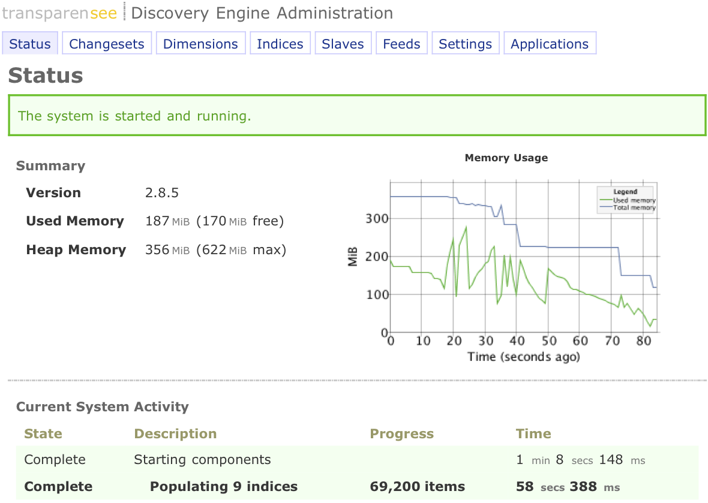
The changesets page provides information about changesets and checkpoints for the engine instance. It let’s you upload new data into the engine, see a history of previous data uploads, create a checkpoint or clear all data from the engine.
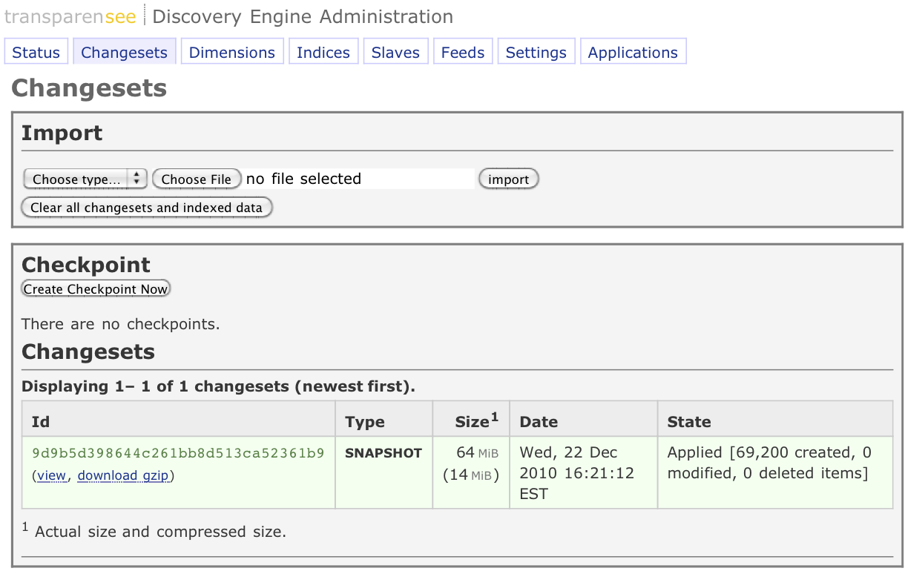
Clear All Changesets and Indexed Data
This feature will remove any changesets and empty your index. This is a developer-feature.
Changeset Type
Choose a changeset type from the options: Snapshot, Full, Delta or Bulk.
snapshot
Clears all data and replaces it with the content of the imported changeset. Data will be removed and the index may be temporarily unavailable until the new data has been loaded.
bulk
Similar to snapshot except that the changeset may only contain set-item elements with no duplicate items. This type of changeset can use a highly-optimized load process, significantly reducing application time.
full
Similar to snapshot except that the data in the index is available at all times. The full changeset type loads the data on top of the existing data and then deletes any items that were not in the imported changeset.
delta
Updates data with the contents of the changeset without affecting any items not specifically included in the changeset.
Import
Browse for a changeset file, choose a changeset type and use the Import button to import the file.
The dimensions page let’s you upload new index definitions into the engine, clear the dimensions and view the current configuration.
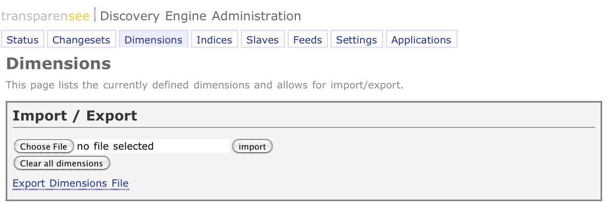
Clear All Dimensions
This feature will remove any dimensions in effect and empty your index. This is a developer-feature.
Import
Browse for a dimensions.xml file and use the Import button to import the file.
Export Dimensions File
This link will export the dimensions xml to a browser window. To export the dimensions.xml to a file, use your browser’s download link to file action.
The indices page gives you a small summary of which portion of your dataset the engine is indexing and then gives a graphical break down of the distribution of data over these indexes.
New in version 2.8.3.
It also provides links on geoloc dimensions to export the location latitude/longitude coordinates and their corresponding index buckets into KML files.
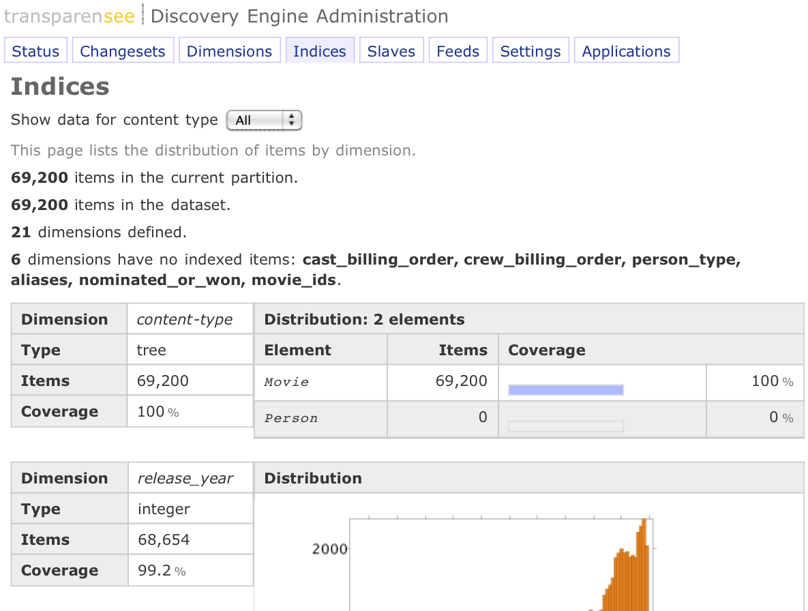
The Feeds page, previously the Admin page, allows you to configure inter-engine data transfer, manage changeset, dimension and built-in data publisher processing.
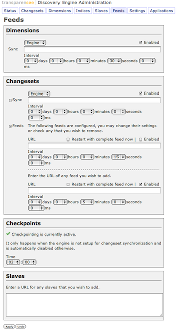
The engine will optionally pull changeset data from another engine (multi-server Data configuration) or it can automatically request changeset data on a time interval that you choose (only one of these two options can be used at a time). Additionally, the time at which the Discovery Search Engine may create a checkpoint can also be configured using this option.
The Admin Tool allows these options to be changed and saved dynamically.
For more information on setting up a multi-server environment, refer to Engine Configuration Scenarios.
Determines that the engine pull it’s dimensions from another engine or other web service. This option is only useful if the dimensions file should be synchronized from a different master engine than the engine that serves the changeset data.
Enabled
Determines if the settings visible in this section are currently enabled.
Engine/URL
Determines if the URL specified in Sync is an another Discovery engine or a web service.
Example:
http://localhost:8091
Sync
Determines the URL from which to request the updated dimensions file.
Interval
Determines the frequency with which dimensions are requested from the URL specifed by Sync.
Example:
http://example.com:8090/ws/dimension
This setting determines URL of the Discovery Search Engine (Data Master) from which to pull (synchronize) a changeset.
If both dimensions and changesets will be served by a master engine, then it is only necessary to use master. This option is only useful if the changesets should be synchronized from a different master engine that the engine that serves the dimension data.
By selecting the Sync or Feeds option, customers can determine the source of their changeset data.
Enabled
Determines if the settings visible in this section are currently enabled.
Engine/URL
Determines if the URL specified in Sync is an another Discovery engine or a web service.
Sync
When this option is enabled, changesets come from a changeset publisher. Determines the URL from which to request the updated dimensions file.
Example:
http://example.com:8090/ws/changeset
Feeds
When this option is enabled, changesets come from a changeset publisher.
For more information on creating a feed using a changeset publisher, refer to Changesets.
Restart with complete feed now
Use this option to request the changeset publisher to send a complete feed at the next scheduled interval. The complete feed can be defined as either a Snapshot, Full or Bulk type.
URL
Determines the URL from which to request the updated changeset.
Example:
http://example.com/changeset.php?profile=production
Interval
Determines the frequency with which changesets are requested from the URL specified by Sync or Feeds.
For more information on creating a feed using a changeset publisher, refer to Changesets.
The engine may periodically make a consolidated checkpoint of all changesets applied. The time at which the engines checkes to see if a checkpoint is required can be specified on this page.
Time
This setting determines the time at which the Discovery Engine may create a changeset checkpoint.
Settings page allows you to configure how the engine appears and functions.
New in version 2.8.5.
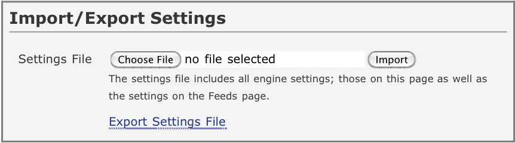
Settings File
This option allows the current engine settings to be stored to a file and restored from a saved file.
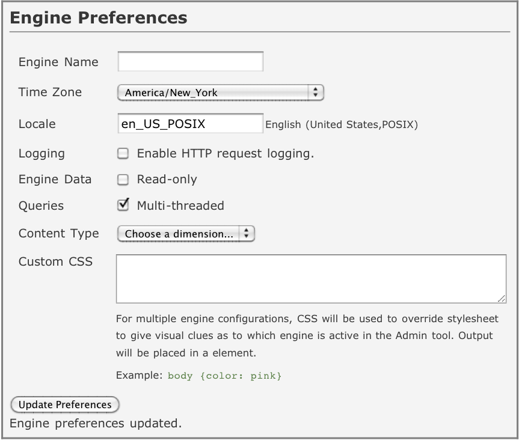
Engine Name
The engine name is used to display on the Admin Tool. It is useful for customers that have multiple engines running at one time as it makes it easier to identify which Admin Tool window applies to which Discovery Search Engine.
Time Zone
The time zone is used when displaying dates and times of changeset and checkpoint activities in the Admin Tool.
Locale
The locale definition string that will determine formatting of numbers and dates in the Admin Tool.
Default: en_US
For more information on specifying a locale, refer to Locale Specs.
The following example will set the locale of the Admin Tool to Portuguese as used in Brazil.
Example:
pt_BR
Logging
Determines if the engine HTTP requests are logged or not. When enabled, the requests are logged to access-yyyy_mm_dd.log in the engine’s log directory.
Default: false
Engine Data
Determines if the engine data and indices are read-only.
Default: writable
Queries
Determines if the engine queries are processed using multiple threads. In some instances, using multiple threads can improve query performance.
Default: disabled
Content Type
Determines the dimension to use as the item content type. Defining a content type dimension will enable showing data coverage and stats on the Indices Page.
Default: none selected
Logging
Determines if HTTP requests to the server are logged.
Default: not logged
Custom CSS
This setting allows customers to specify a brief CSS spec that can be used to visually identify the engine to which a particular Admin Tool belongs.
Default: not set
Example:
body {background-color: pink}
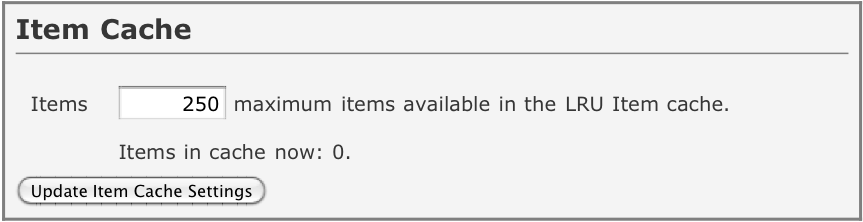
Items
The item cache is used for improving the performance of retrieving the original changeset properties in response to a query. The value is used to limit the number of items that are cached.
Default: 1,000
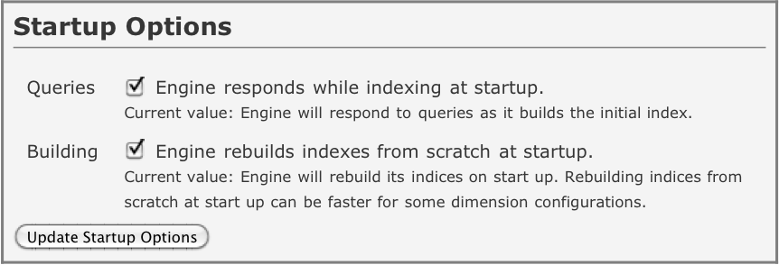
Engine responds while indexing at startup
The engine will respond to queries while it is starting up. This means that though the engine is responsive, the query results may be incomplete.
Default: true
Engine rebuilds indexes from scratch at startup
Some engine configurations respond better if disk-based indexes are rebuilt from scratch, otherwise, the engine tries to optimize the index creation process when an engine is restarted.
Default: false
The applications page contains a list of available stand alone web applications that are bundled with the engine.
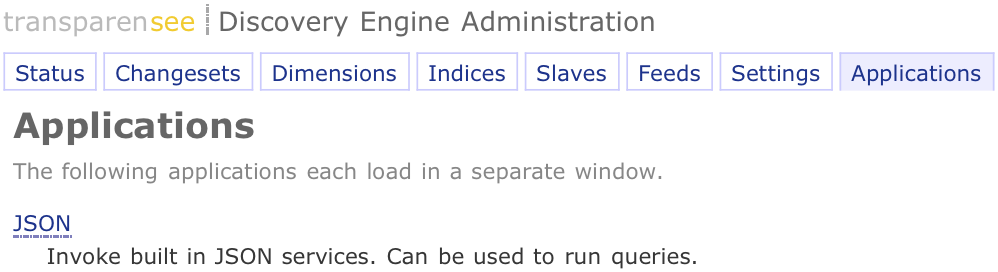
The JSON page gives the ability to test the JSON query API and is a great tool to help you ramp up on the details as well as debug any queries that don’t behave as you expect.
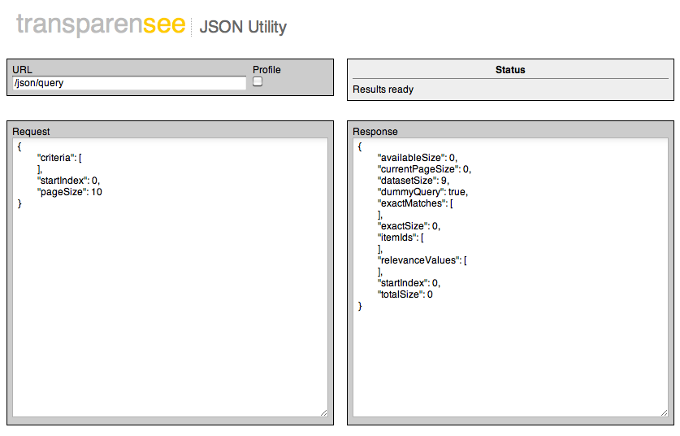